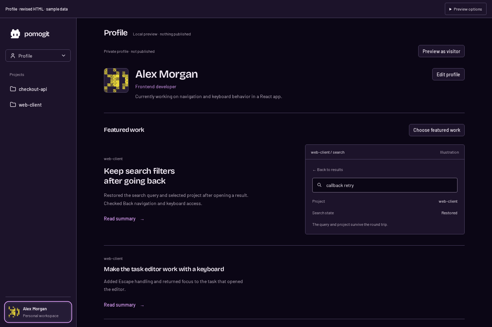
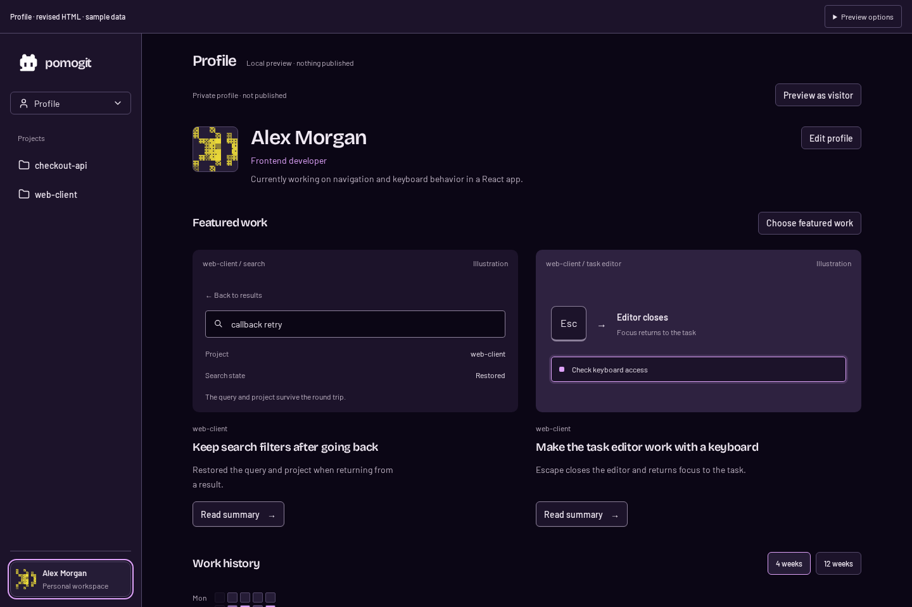
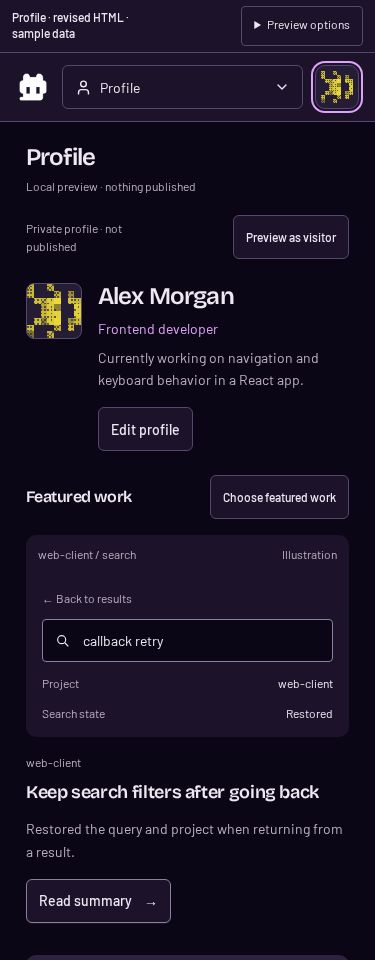
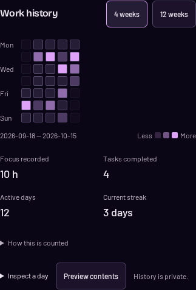
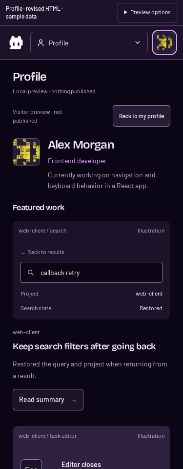

Same app palette and Dither avatar. A compact introduction, two-column work gallery, shorter captions and quiet history. No long horizontal section dividers. Identity and work are illustrative; the search window is labeled as an illustration. React is unchanged.
Previous divider-based layout / new gallery

Previous divider-based layout

New gallery: work samples group the content, without separator rules.
Mobile, history and visitor view

Identity and featured-work gallery

History with counting rules and day inspection on request

Visitor preview: public summaries, with private context omitted